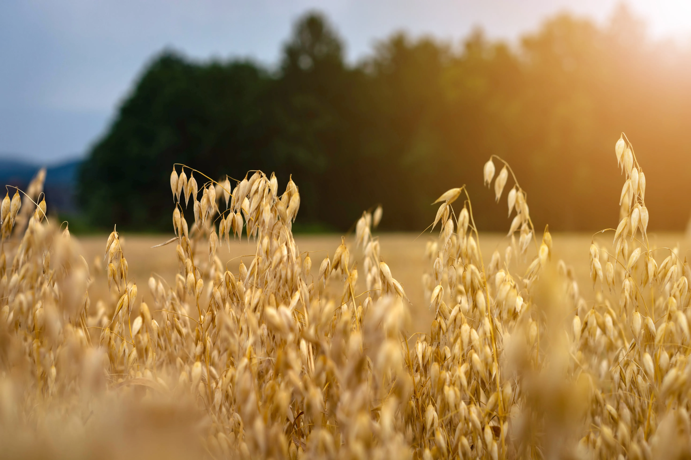
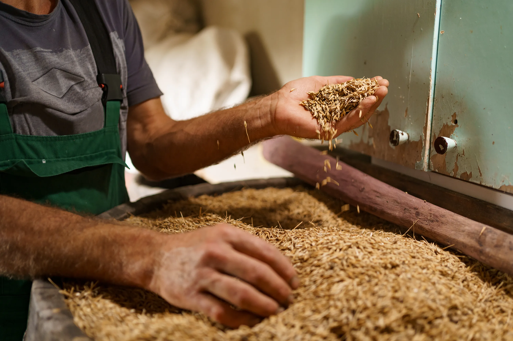

Del cultivo al grano procesado
Un cereal adaptado al sur de Chile
La avena se cultiva principalmente en las regiones del centro-sur del país, en suelos y climas que favorecen un grano de alta calidad nutricional. Aproavena trabaja para propiciar su cultivo en todo el territorio nacional, apoyando a productores y fortaleciendo la cadena agrícola.
El seguimiento técnico de la siembra y cosecha es clave para asegurar un abastecimiento estable a la industria procesadora asociada.


Estándares de calidad e inocuidad
Una vez cosechada, la avena pasa por procesos de limpieza, descascarado, laminado y otros tratamientos industriales que la transforman en los productos que llegan a la mesa de los chilenos: copos, harinas, avena instantánea y más.
Nuestros asociados trabajan permanentemente en fortalecer los atributos de calidad e inocuidad de estos productos, en línea con los objetivos de la Asociación.
¿Por qué consumir avena?
La avena es reconocida por su aporte de fibra, energía y proteína vegetal. Difundir su consumo es uno de los objetivos permanentes de Aproavena, en beneficio de la alimentación de las familias chilenas.

La avena, uno de los cereales más completos y equilibrados
Su alto valor nutricional, versatilidad y beneficios para la salud la han convertido en un alimento clave tanto para el consumo humano como para la producción agropecuaria sustentable. En Chile, su cultivo aporta rotación de suelos, eficiencia hídrica y sostenibilidad, siendo un componente clave de la agricultura regenerativa.
Por cada 100 g de avena cruda
| Nutriente | Cantidad | % Valor Diario* |
|---|---|---|
| Energía | 389 kcal | 19% |
| Proteínas | 16,9 g | 34% |
| Grasas totales | 6,9 g | — |
| Ácidos grasos insaturados | 65% del total | — |
| Hidratos de carbono | 66 g | — |
| Fibra dietaria total | 10,6 g | 42% |
| Betaglucanos (fibra soluble) | 3–4 g | — |
| Hierro | 4,7 mg | 26% |
| Magnesio | 177 mg | 45% |
| Zinc | 3,9 mg | 36% |
| Fósforo | 523 mg | 52% |
| Calcio | 54 mg | 5% |
| Vitaminas del complejo B (B1, B5, B6) | Aporte significativo | — |
| Vitamina E | 0,4 mg | — |
*Porcentaje calculado sobre una dieta de 2.000 kcal diarias. Fuente: USDA FoodData Central / FAO.
Qué aporta cada porción
Vitaminas y minerales
Destaca por su alto contenido en hierro, magnesio, selenio, calcio, zinc, fósforo, vitamina E y vitaminas del complejo B, esenciales para el metabolismo, la energía y la función inmunológica.
Grasas saludables
Contiene principalmente grasas insaturadas y ácido linoleico, beneficiosos para la salud cardiovascular. Cerca del 65% de sus lípidos son grasas buenas.
Hidratos de carbono y fibra
Aporta energía sostenida gracias a carbohidratos de absorción lenta. Su fibra soluble (betaglucanos) ayuda a la saciedad, el tránsito intestinal y a estabilizar el azúcar en sangre.
Proteínas de alta calidad
Sus proteínas vegetales, combinadas con lácteos o legumbres, alcanzan un valor biológico similar al de la carne o los huevos.
Aminoácidos esenciales
Aporta seis de los ocho aminoácidos esenciales, que contribuyen al crecimiento y la reparación de tejidos y estimulan la función hepática.
Por qué la avena hace bien
Controla el colesterol, gracias a la fibra soluble que reduce el colesterol LDL (“malo”).
Regula el azúcar en sangre, evitando alzas bruscas de glucosa.
Favorece la concentración y el rendimiento, al liberar energía de forma gradual.
Ayuda a controlar el peso, promoviendo saciedad y evitando picoteos.
Favorece la digestión, previniendo el estreñimiento.
Actúa como antioxidante natural, por sus avenantramidas, compuestos exclusivos de la avena con efecto antiinflamatorio y vasodilatador.
De la mesa a la industria
Consumo humano
Copos, harina, granola, barras energéticas, bebidas vegetales y productos de panadería.
Uso industrial
Ingrediente para el desarrollo de alimentos funcionales y fortificados.
Uso pecuario
Excelente fuente de energía y proteínas en la alimentación animal.
Cosmética natural
Base de productos calmantes e hidratantes para piel sensible.
Lo que quizás no sabías de la avena
Los betaglucanos de la avena están reconocidos por la EFSA (Autoridad Europea de Seguridad Alimentaria) por su efecto reductor del colesterol.
Un desayuno con avena aporta más del 20% de la fibra diaria recomendada.
Hoy la avena es uno de los cereales más demandados en el desarrollo de productos saludables y plant-based.
Su cultivo aporta rotación de suelos, eficiencia hídrica y sostenibilidad a la agricultura regenerativa.
Fuentes: USDA FoodData Central (2024) · FAO — Nutrient Database · MINSAL — Guías Alimentarias para la Población Chilena · European Food Safety Authority (EFSA).